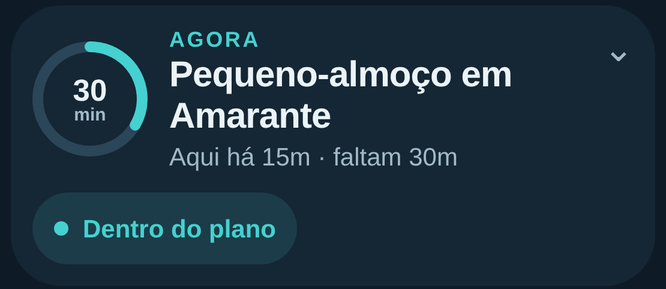
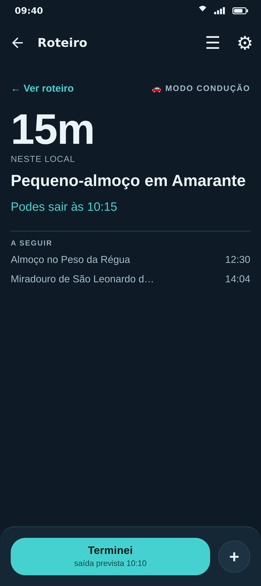
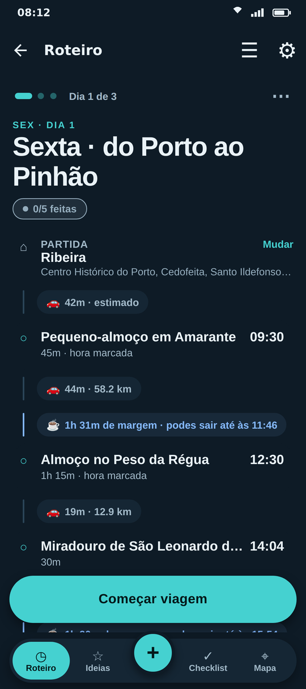
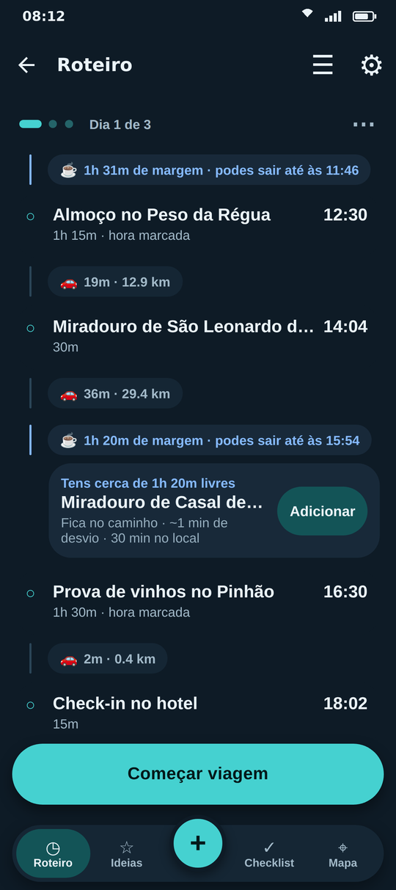
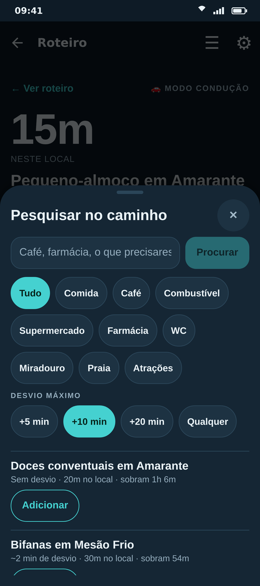
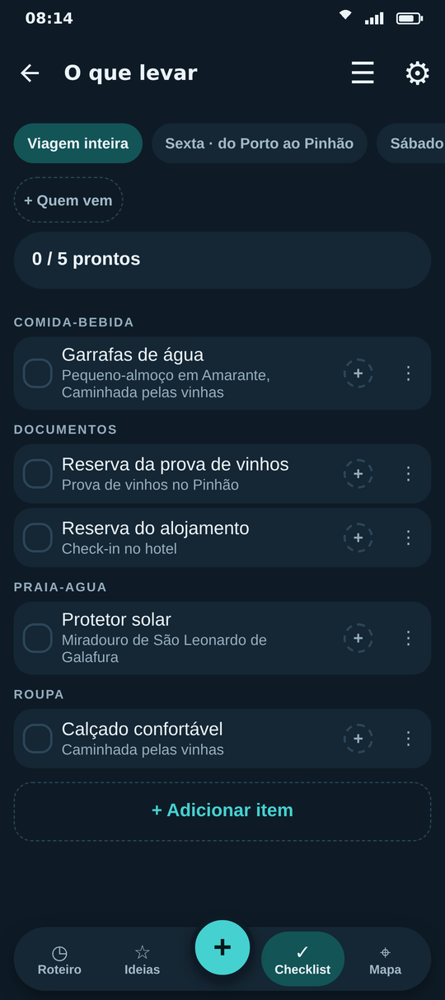
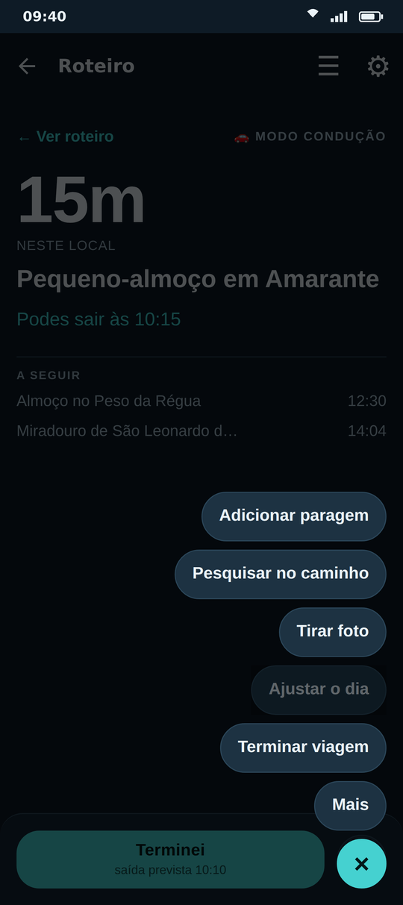

Always know how the day is going
Where you are in the plan, how long is left and whether the rest still fits. The times that follow adjust themselves.

A day-by-day itinerary, times that adjust themselves and Google Maps one tap away. No account, no ads.


Free and complete on your phone. You need no account, there are no ads and it works offline. Your GPS track never leaves your pocket.
Arrive early or late and the rest of the day adjusts. You just decide.
Where you are in the plan, how long is left and whether the rest still fits. The times that follow adjust themselves.

Save places without a set time. With time to spare, Plan-ish suggests one on your way.

Coffee, fuel or a pharmacy, sorted by how much time each adds to the trip.

Sunscreen goes with the viewpoint, boots with the hike. See the whole trip or one day.

Photos by day and by stop, kept on your phone, and all exported in one file whenever you like.
From scratch, from a Community itinerary, or with the plan an AI assistant wrote for you.

Large type and one button to mark your arrival. When it is time to go, Google Maps opens with the next stop already set.
Edit the same plan at the same time, on a phone or in a browser. Everyone sees the others' changes live.
Trips from people who made them, confirmed by GPS. Copy one into your own planning and change what you like.
Only these two use a Community account. The rest of Plan-ish never needs one.
They stay on your phone. There is no server holding your plans.
It never leaves your phone, not even when you publish a trip.
None. Your data is never sold or shared.
You do not need one. Only the Community asks for one, and only if you want to use it.
It is in testing on Google Play. Ask for access and install it like any other app, with automatic updates.